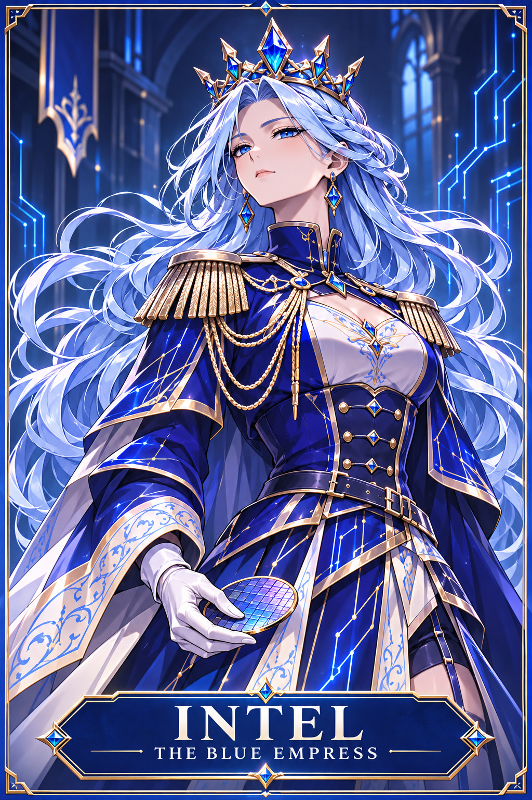

Digital-human expression mapping prototype — issue #73
Parameter mapping demo / *not* final animated character artwork. Independent controls use a vector face test fixture; approved canon reference remains unmodified below.
Outstanding: 2D control-space mock-up; no photoreal 3D actor or facial video. Required: rights-cleared original fictional digital-human mesh, FACS rig, facial capture and OBS.
Scene data · Generated control diagram

Canonical INTEL reference; not regenerated.